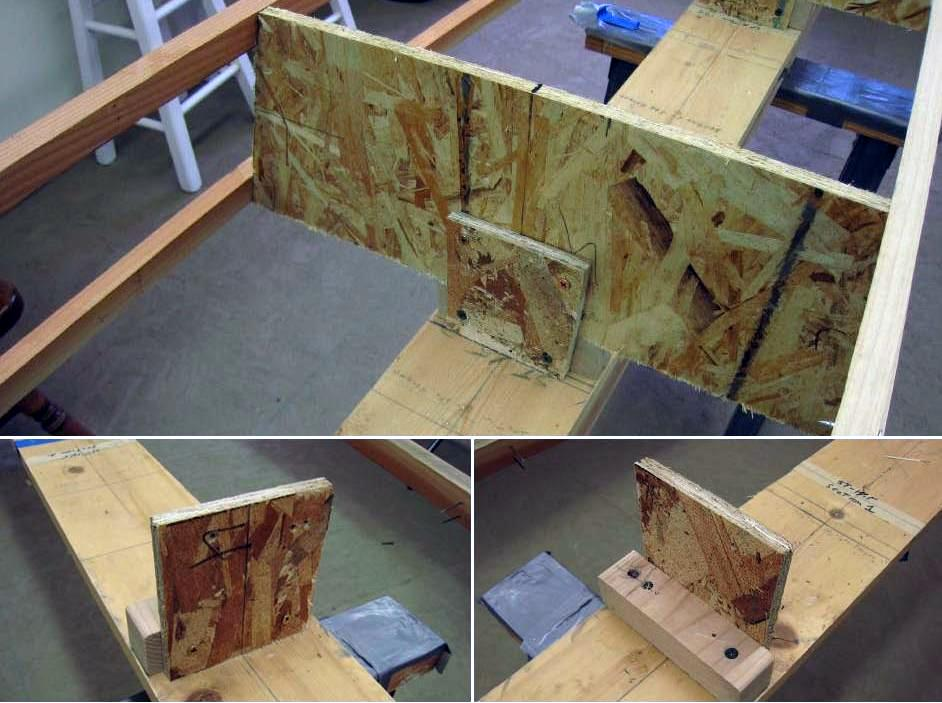

| Sonnet (Skinning Frame) | Menu Last Page Next Page |
|

Station Supports - The Sonnet 16 uses 6 OSB stations attached to the strongback / skinning frame. The Sonnet 14 uses 3 OSB stations. The stations are attached to the strongback with station supports made of OSB and pine. The station supports are attached to the strongback and to the stations with deck screws. The 1/2" ( 13mm) thick OSB plates are approximately 5" (127mm) square, and the pine bases are approximately 1.5" X 1.5" X 5" (38 X 38 X 127mm).
|
|